Lo que el
tiempo guarda.
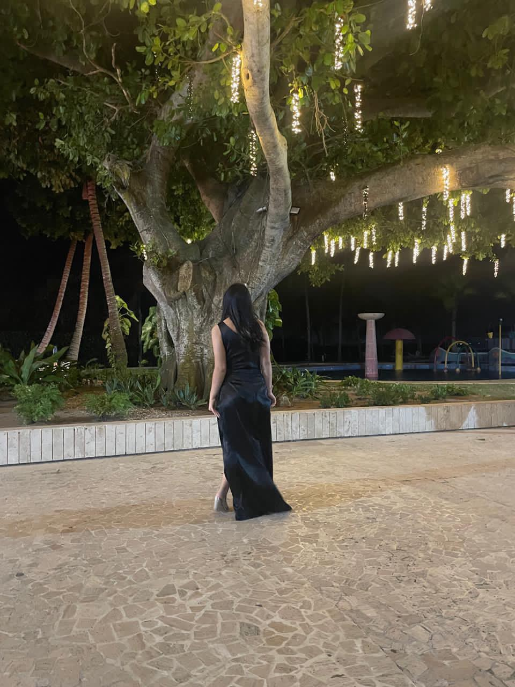
Hay instantes que se quedan.
Los momentos que siempre van a quedarse
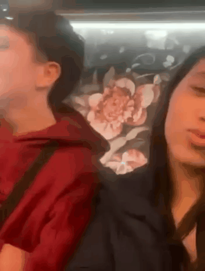
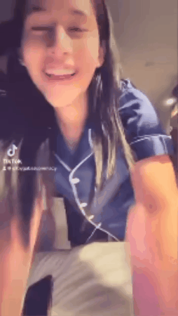
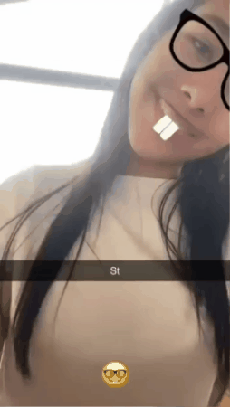
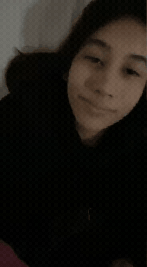
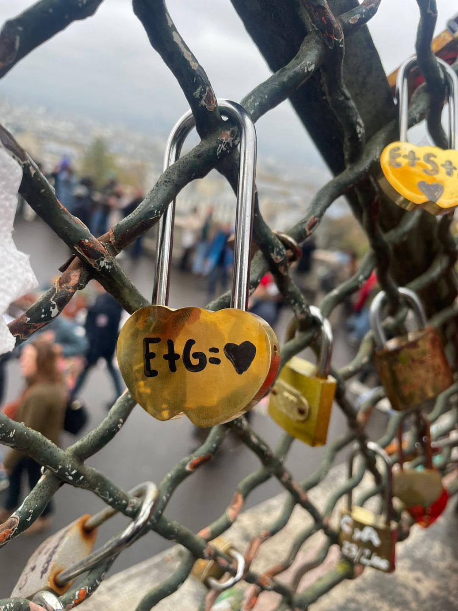
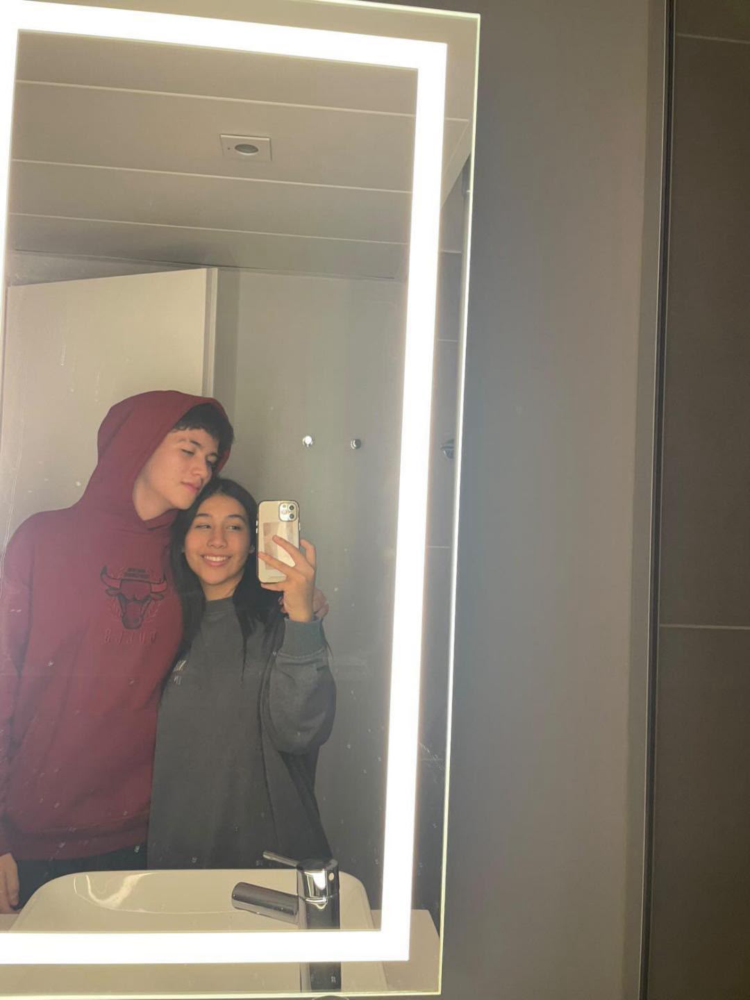
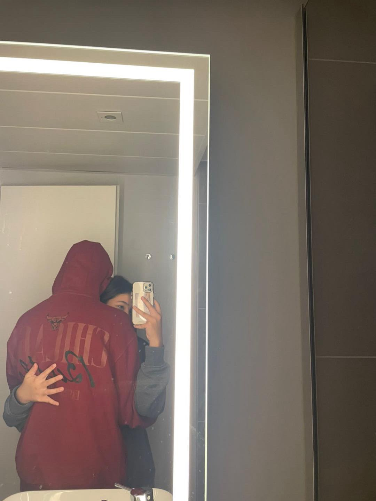
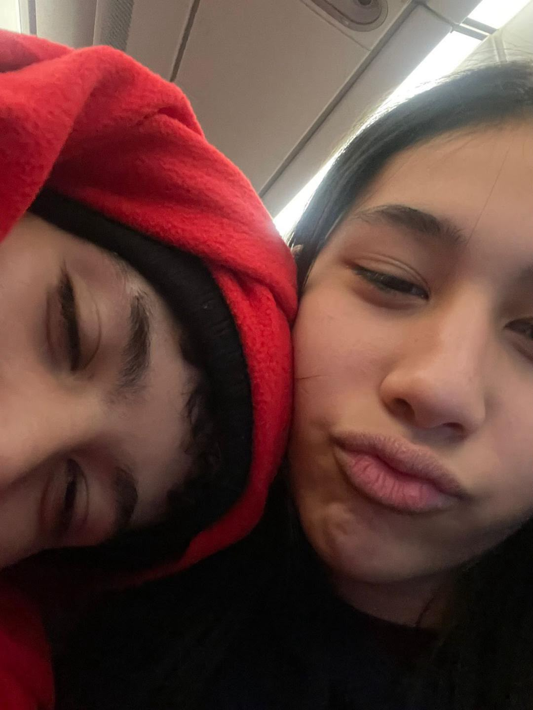
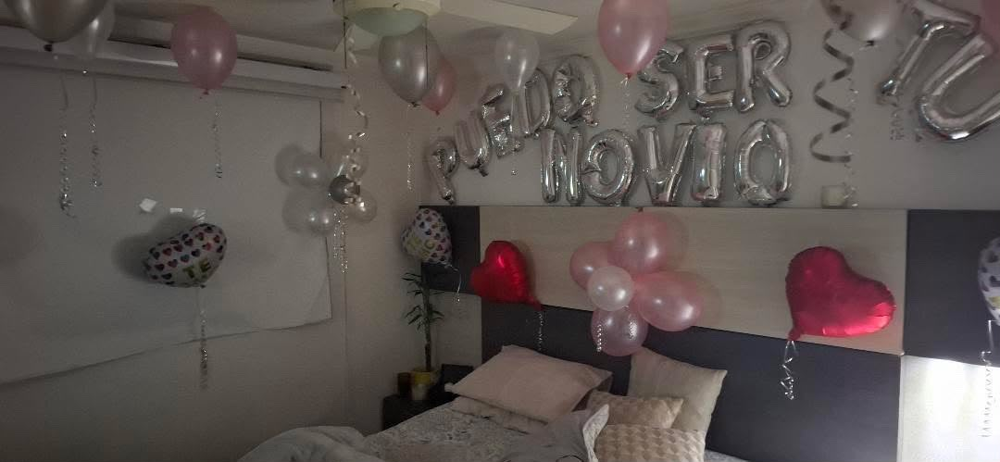
Si pudieras verme hoy
A veces me pregunto qué pensarías de mí si pudieras conocerme como soy hoy; si al mirarme encontrarías al muchacho de antes o verías cuánto ha cambiado aquel que un día fui.
No puedo cambiar la historia ni negar mis errores, ni devolverle al pasado sus días mejores; solo cargo conmigo lo que aprendí del dolor y la difícil lección de cuidar mejor el amor.
Hoy miro hacia adelante, descubriendo quién soy, aprendiendo de cada paso y de aquello que hoy comprendo; hay tantas partes de mí que apenas estoy conociendo y tantas cosas bonitas que todavía estoy construyendo.
Hoy quiero que mis acciones hablen por mí, que reflejen todo aquello que he aprendido; porque más allá de quien fui alguna vez, hay alguien nuevo que todavía sigue creciendo.
Me habría gustado que vieras en quién me convertí, que conocieras al hombre que antes no supe mostrarte a ti.
Y aunque tal vez no tenga la oportunidad de demostrártelo hoy, sigo siendo aquel que un día soñó con ser mejor para los dos.
Con cariño, Esteban.

No sé qué nos tenga preparado la vida ni qué lugar ocuparemos en la historia del otro de ahora en adelante, pero siempre voy a agradecer haberte conocido. Y aunque algún día nuestros caminos estén completamente separados, de corazón voy a querer que estés bien.

Quizás algún día ♡
Me gustaría poder hablar contigo
Honestamente, hay algo que todavía me gustaría mucho: poder sentarme frente a ti y hablar de todo lo que pasó entre nosotros. Sin prisas, sin orgullo y sin miedo a decir lo que realmente sentimos.
Me gustaría escucharte. Saber qué te dolió, qué cosas te guardaste, qué sentiste en aquellos momentos en los que quizás no supe entenderte y qué heridas pude dejarte sin darme cuenta.
También me gustaría poder compartir contigo lo que he comprendido desde entonces. Las cosas que hoy veo de otra manera y todo aquello que desearía haber sabido antes.
No espero que una conversación cambie el pasado, pero me gustaría que, si algún día deseas tenerla, no quieras estar ahí dispuesto a escuchar de verdad.
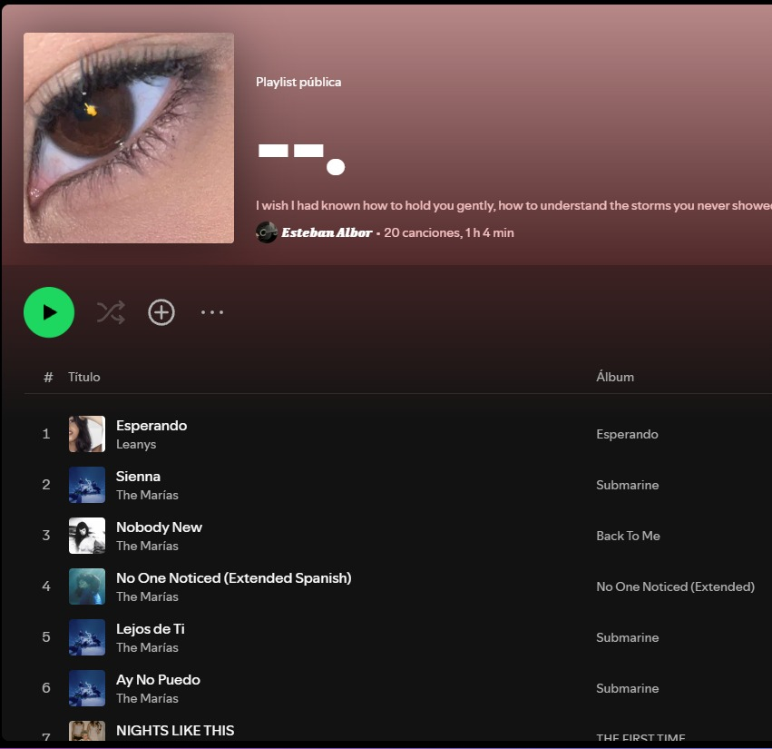
La playlist
Everything we lived through became part of a story I’ll always carry with me. Every little moment, every memory, and every feeling will always have a special place in my heart.
↗ Abrir SpotifyLa música siempre será un buen lugar para guardar lo que sentimos ♡
Las últimas palabras
"No sé si algún día vas a olvidar, ni puedo ordenar a quien alguien va a ser. No borro lo que pasó, solo intento ser mejor cada día."
Ojalá la vida nos permita sanar lo que nos dolió, perdonarnos por lo que no supimos ser y volver a elegirnos, esta vez con el amor y la madurez que antes nos faltaron.
Whatever life has planned for us,
I'll always be grateful for what we shared.
I'll love you silently the day I do.
— Esteban
Por todo lo que fue, por todo lo que es, y por todo lo que aún podría ser. ♡